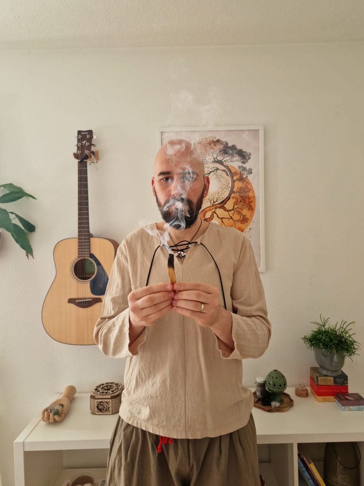
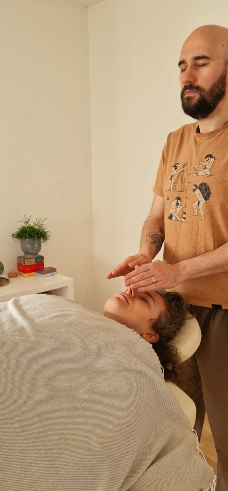

Individual Reiki sessions
Soul Recharge
A quiet space to restore, release, and reconnect.

What is Reiki?
A natural Japanese technique
Reiki is a natural old Japanese technique that channels universal life energy through the hands.
It promotes relaxation, self-healing, and harmony of body, mind, and spirit. Anyone can benefit from it, as it is part of our lives.
The session
What Soul Recharge offers
Soul Recharge is an individual Reiki session designed to support your nervous system, emotions, and inner alignment. It's not about fixing or changing who you are. Instead, it offers a safe, held space where you can:
- Release tension and emotional charge
- Restore your energy and inner balance
- Explore what is alive in your system in the moment
- Reconnect with your own inner intelligence and guidance
Every session is guided by what shows up for you, rather than a fixed protocol. It is experiential, relational, and deeply present.

A typical session
Unfolds at your own pace
You remain fully in charge, while I gently place my hands in specific positions to support energy flow. During the session:
- You remain fully clothed, lying or sitting comfortably
- A session lasts around 50 minutes
- You may feel warmth, tingling, relaxation, or a sense of peace
- Optional conversation before or after, if needed, to integrate insights
Good to know
Healing stages, risks & considerations
Healing stages
- Energy filling — the body absorbs what it needs, creating a feeling of well-being
- Cleansing — toxins and blockages are released (sometimes with mild detox reactions)
- Healing crisis — temporary intensification of symptoms as the body adjusts
- Balance & recovery — energy stabilizes; healing continues at physical, emotional, and spiritual levels
Each session is unique. The outcome comes from your own system's intelligence — the Reiki and the presence are there to support it, not produce it. Effects can be immediate or gradual.
Risks & considerations
- Reiki has no harmful side effects
- Detox reactions (e.g. tiredness, headaches, digestive changes) may appear but are temporary and natural
- Reiki does not replace medical care; it supports and enhances it
Testimonials
What people experienced
I recently completed 4 Reiki sessions with Flavius and had a very positive experience. Although I had never tried this technique before, I can confidently say that each session was beneficial. The process helped me become more aware of physical signals, which gradually transformed into a focused flow of positive energy directed toward myself.
During the second and third sessions, I experienced some physical discomfort that brought back certain memories which had previously troubled me. However, I was able to process and release them, which left me feeling lighter and more positive overall. I am grateful to Flavius for introducing me to this path and look forward to continuing this journey.
I am not a "spiritual" person, not really understanding all the inner soul-, breathing-, healing-techniques (and not having the patience for it). Trying Reiki was really a challenge for me to trust the process and try something totally new and unknown.
Flavius is super professional and made the whole experience real for me. I felt during and after the sessions energy in my body, that opened stuck emotions. I felt released and much relaxed after the session. Thank you, dear Flavius, I recommend it to everyone!
It was my first experience with Reiki and, honestly, I went in without expectations, just with an open mind and an open heart. I had four sessions with Flavius, and I can say the experience was surprisingly pleasant and calming. The way he worked with the energy was very attentive and gentle, unhurried.
The environment mattered a lot to me. The atmosphere, the scents, the quiet — all of it helped me ease into the state and feel safe. Flavius was very professional throughout the entire process. For anyone who is curious or just beginning their journey with Reiki, I believe he is a very suitable person to start with.
It was my first time trying Reiki, and honestly, the best testimonial I can give is that I keep going back, again and again, for packages of 4 sessions as part of my inner development journey. Each session has been its own universe. I've released old blockages, felt physical tension leave my body, and experienced deep layers of healing. Some moments have even felt as profound and spiritually expansive as the ones I've only had before during plant ceremonies.
And Flavius himself… his presence is something rare. His energy is grounded, steady, deeply attuned, protective, calm yet powerful — a beautifully aligned space that makes you feel both safe and open. I would wholeheartedly recommend this experience to anyone feeling called to explore deeper layers of themselves.
You don't need to be ready. You don't need to know what you're looking for.
If something in you is drawn toward stillness, honesty, and gentle discovery, you are welcome here.
This is The Becoming Field
Book a session